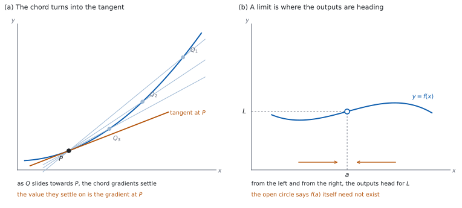

SL 5.1 — Limits and the derivative（極限と導関数の考え方）
- average rate of change（平均変化率）を、\(2\) 点を結ぶ直線の傾きとして求められる。
- limit（極限）が「\(x\) を近づけたときに出力が向かう先」であることを説明できる。
- 表の値から極限を見積もれる。
- 割線の傾きが接線の傾きに近づいていくようすを説明できる。
- derivative（導関数）を、傾きの関数としても、変化率としても読める。
- \(\dfrac{dy}{dx}\)、\(f'(x)\)、\(\dfrac{dV}{dr}\)、\(\dfrac{ds}{dt}\) を、場面に応じて使い分けられる。
- 導関数の値に、正しい単位をつけられる。
The idea
1. \(2\) 点を結ぶ直線の傾き
曲線の上に \(2\) 点をとって直線で結ぶと、その直線を chord（割線）といいます（図 1 (a)）。
\(x = a\) から \(x = b\) までの割線の傾きが、average rate of change（平均変化率）です。
\[ \text{平均変化率} = \frac{f(b) - f(a)}{b - a} \tag{1}\]
これは「その区間をならしたときの傾き」です。 途中でどれだけ上下していても、両端しか見ません。
直線なら、どこで測っても同じ値になります。 曲線だと、区間の取り方で値が変わります。ここが曲線の難しいところで、微分が要る理由です。
2. limit（極限）
\(x\) を \(a\) に近づけたときに \(f(x)\) が向かう先を、limit（極限）といい
\[ \lim_{x \to a} f(x) = L \tag{2}\]
と書きます（図 1 (b)）。
「近づく」であって「代入する」ではありません。 \(x = a\) そのものは見ません。
だから、\(f(a)\) が存在しなくても極限はありえます。 \(\dfrac{x^{2} - 1}{x - 1}\) は \(x = 1\) で分母が \(0\) になり値がありませんが、\(x\) を \(1\) に近づけていくと出力は \(1\) つの値に向かいます。
左からと右からの両方を見ます。 どちらも同じ値に向かうとき、その値が極限です。
3. 表で見積もる
極限は、\(a\) に近い \(x\) を並べた表から見積もれます。
| 見ること | すること |
|---|---|
| 左から | \(a\) より少し小さい \(x\) を、\(a\) に近づけていく |
| 右から | \(a\) より少し大きい \(x\) を、\(a\) に近づけていく |
| 一致するか | 両側が同じ値に向かっていれば、それが極限 |
表には \(a\) そのものを入れません。 極限は「\(a\) に近い \(x\) での値の行き先」であって、\(x = a\) での値のことではないからです。\(f(a)\) は存在しないこともありますし、存在していても、極限をそこから決めるわけではありません。
Not required: Formal analytic methods of calculating limits.
式変形で極限を出す方法は、SL では求められていません。 表かグラフで見積もれれば十分です。
4. 割線から接線へ
曲線上の点 \(P\) を固定し、もう \(1\) 点 \(Q\) を \(P\) に近づけていきます（図 1 (a)）。
なめらかな曲線では、割線 \(PQ\) の傾きは \(1\) つの値に落ち着いていきます。 その値が、\(P\) での tangent（接線）の傾きです。
これが「曲線の \(1\) 点での傾き」の意味です。 傾きは本来 \(2\) 点がないと測れませんが、\(2\) 点目を近づけていった先を見ることで、\(1\) 点での傾きを決められます。
\(P\) の \(x\) 座標を \(x\)、\(Q\) までの横のずれを \(h\) とすると、割線の傾きは
\[ \frac{f(x + h) - f(x)}{h} \tag{3}\]
です。\(h\) を \(0\) に近づけたときの行き先が、\(P\) での傾きです。
式 3 は公式集にありません。 SL では、この式を使って導関数を計算することも求められていません。「割線が接線に近づく」という理解までです。
5. 記号の書き方
\(P\) での傾きを、\(x\) の関数として見たものが derivative（導関数）です。書き方はいくつかあります。
| 書き方 | よく使う場面 |
|---|---|
| \(f'(x)\) | 関数を \(f\) と名づけたとき |
| \(\dfrac{dy}{dx}\) | \(y\) が \(x\) の式で与えられたとき |
| \(\dfrac{dV}{dr}\) | 体積 \(V\) が半径 \(r\) で決まるとき |
| \(\dfrac{ds}{dt}\) | 変位 \(s\) が時刻 \(t\) で決まるとき |
\(\dfrac{dy}{dx}\) の形の書き方を Leibniz notation（ライプニッツの記法）といいます。
\(\dfrac{dy}{dx}\) は \(1\) つの記号です。 \(dy\) と \(dx\) という \(2\) つの数の分数ではありません。約分はできません。
分子と分母の文字を見れば、何を何で微分したかが分かります。 \(\dfrac{dV}{dr}\) なら「体積を半径で」です。
6. 導関数は「関数」
\(f'\) は、\(x\) ごとに傾きを返す関数です。 \(x\) を \(1\) つ決めるごとに、そこでの接線の傾きが \(1\) つ決まります。
だから \(f'(3)\) のように、値を入れて使えます。 \(f'(3)\) は「\(x = 3\) での接線の傾き」です。
符号に意味があります。 \(f'(x) > 0\) ならその点で右上がり、\(f'(x) < 0\) なら右下がり、\(f'(x) = 0\) なら接線が水平です。詳しくは SL 5.2 で扱います。
7. 変化率としての読み方
導関数は、rate of change（変化率）としても読めます。
「\(x\) が \(1\) 増えるあたり、\(y\) がどれだけ増えるか」です。 ただし、その瞬間の増え方です。
単位は「\(y\) の単位 ÷ \(x\) の単位」です。 \(s\) がメートル、\(t\) が秒なら、\(\dfrac{ds}{dt}\) はメートル毎秒です。
答えに単位を書いてください。 場面のある問題では、数だけでは意味が伝わりません。
Topic 5 は、AA ではほとんどが電卓なしの項目です。このページの例題と演習は、計算が手でできる数にしてあります。
グラフをかいて接線のようすを見たり、表の値を出したりできます。傾きが近づいていく先を、目で確かめるのに向いています。
それでも、答案に書くのは手で出せる形の式と値です。 電卓は確かめに使ってください。

Why it works
なぜ、\(1\) 点での傾きを「極限」で決めるのでしょうか。 傾きの定義に \(2\) 点が要るからです。
\(1\) 点だけでは \(\dfrac{\text{縦の差}}{\text{横の差}}\) が \(\dfrac{0}{0}\) になり、値が決まりません。そこで、\(2\) 点で測った値を並べて、その行き先を見ます。
なぜ、\(h = 0\) を代入してはいけないのでしょうか。 式 3 の分母が \(0\) になるからです。\(\dfrac{0}{0}\) は「何でもありうる形」で、値が決まりません。
代入せずに、近づけます。 \(h\) が \(0\) でない間は、割り算がふつうにできます。その値の行き先だけを見ます。
なぜ、割線の傾きは落ち着くのでしょうか。 \(f(x) = x^{2}\) で \(x = 5\) のところを見てみます。
\[ \frac{(5 + h)^{2} - 5^{2}}{h} = \frac{25 + 10h + h^{2} - 25}{h} = \frac{10h + h^{2}}{h} = 10 + h \]
\(h \ne 0\) である間、割線の傾きはちょうど \(10 + h\) です。 \(h\) を小さくすれば、この値は \(10\) に近づきます。近づくだけで、\(10\) になることはありません。 \(h = 0\) では、そもそも割線が引けないからです。
この計算は、SL では求められていません。 ここでは「なぜ落ち着くのか」を見るために書きました。試験では、表かグラフから見積もれれば十分です。
とがった点があるときは、落ち着かないこともあります。 左右で行き先がちがうからです。SL で扱うのは、落ち着く場合だけです。
なぜ、左右の両方を見るのでしょうか。 片側だけでは、行き先が \(1\) つに決まらないことがあるからです。
たとえば \(f(x) = \dfrac{\lvert x \rvert}{x}\) は、\(x\) が正なら \(1\)、負なら \(-1\) です。\(x \to 0\) で、右からは \(1\) に、左からは \(-1\) に向かいます。行き先が食いちがうので、\(x \to 0\) の極限はありません。
なぜ、\(f'\) は関数になるのでしょうか。 曲線上のどの点にも接線が \(1\) 本ずつ決まるからです。
\(x\) を入れると傾きが \(1\) つ返ってくるので、これは関数です。もとの \(f\) とは別の関数で、グラフの形もふつうは変わります。
なぜ、単位が「\(y\) の単位 ÷ \(x\) の単位」になるのでしょうか。 式 1 が割り算だからです。
分子は \(y\) の差なので \(y\) の単位、分母は \(x\) の差なので \(x\) の単位です。割ればその比になります。極限を取っても単位は変わりません。
Worked examples
問題文は英語です。意味が理解できなかったら、問題文の下の「日本語訳」を開いてください。解説は日本語です。
この項目は Paper 1 に出ます。 電卓なしで解ける数にしてあります。
例題 1 The function \(f\) is given by \(f(x) = x^{2}\).
(a) Find the gradient of the chord joining the points on the curve where \(x = 2\) and \(x = 2 + h\), for \(h = 1\), \(h = 0.5\), \(h = 0.1\) and \(h = 0.01\).
(b) Write down the value that these gradients appear to be approaching.
日本語訳
関数 \(f\) は \(f(x) = x^{2}\) で与えられます。
(a) \(x = 2\) と \(x = 2 + h\) における曲線上の \(2\) 点を結ぶ割線の傾きを、\(h = 1\)、\(h = 0.5\)、\(h = 0.1\)、\(h = 0.01\) について求めなさい。
(b) これらの傾きが近づいていると考えられる値を書きなさい。
(a) 式 1 を使います。\(f(2) = 4\) です。
| \(h\) | \(2 + h\) | \(f(2+h)\) | 割線の傾き |
|---|---|---|---|
| \(1\) | \(3\) | \(9\) | \(\dfrac{9 - 4}{1} = 5\) |
| \(0.5\) | \(2.5\) | \(6.25\) | \(\dfrac{6.25 - 4}{0.5} = 4.5\) |
| \(0.1\) | \(2.1\) | \(4.41\) | \(\dfrac{4.41 - 4}{0.1} = 4.1\) |
| \(0.01\) | \(2.01\) | \(4.0401\) | \(\dfrac{4.0401 - 4}{0.01} = 4.01\) |
(b) 傾きは \(4\) に近づいています。
検算（差を見る）。 \(5\)、\(4.5\)、\(4.1\)、\(4.01\) と、\(4\) との差が \(1\)、\(0.5\)、\(0.1\)、\(0.01\) になっています ✓ ちょうど \(h\) と同じです。
検算（\(h\) を半分にしてみる）。 \(h = 0.05\) なら \(f(2.05) = 4.2025\) で、傾きは \(\dfrac{0.2025}{0.05} = 4.05\) です ✓ \(4.1\) と \(4.01\) の間に入っています。
検算（向き）。 \(h > 0\) ではどの傾きも \(4\) より大きくなっています ✓ 右側は曲線が急になっていくので、割線のほうが接線より急です。
検算（\(h = 0\) を入れない）。 \(h = 0\) にすると分母が \(0\) になります ✓ 表に \(h = 0\) の行がないのは、そのためです。
(a) \[h = 1: \ \frac{9 - 4}{1} = 5 \qquad h = 0.5: \ \frac{6.25 - 4}{0.5} = 4.5\] \[h = 0.1: \ \frac{4.41 - 4}{0.1} = 4.1 \qquad h = 0.01: \ \frac{4.0401 - 4}{0.01} = 4.01\]
(b) the gradients approach \(4\)
例題 2 The function \(g\) is given by \(g(x) = \dfrac{x^{2} - 9}{x - 3}\).
(a) Copy and complete the table below, and use it to estimate \(\displaystyle\lim_{x \to 3} g(x)\).
| \(x\) | \(2.9\) | \(2.99\) | \(3.01\) | \(3.1\) |
|---|---|---|---|---|
| \(g(x)\) |
(b) Explain why the value of \(\displaystyle\lim_{x \to 3} g(x)\) cannot be found by substituting \(x = 3\).
日本語訳
関数 \(g\) は \(g(x) = \dfrac{x^{2} - 9}{x - 3}\) で与えられます。
(a) 下の表を写して完成させ、それを使って \(\displaystyle\lim_{x \to 3} g(x)\) を見積もりなさい。
(b) \(\displaystyle\lim_{x \to 3} g(x)\) の値が \(x = 3\) を代入しても求められない理由を説明しなさい。
(a) それぞれ代入します。
| \(x\) | \(2.9\) | \(2.99\) | \(3.01\) | \(3.1\) |
|---|---|---|---|---|
| \(g(x)\) | \(5.9\) | \(5.99\) | \(6.01\) | \(6.1\) |
左からは \(5.9\)、\(5.99\) と上がり、右からは \(6.1\)、\(6.01\) と下がっています。どちらも \(6\) に向かうので
\[ \lim_{x \to 3} g(x) = 6 \]
(b) Explain なので、英語で理由を書きます。
試験ではこう書く
Substituting \(x = 3\) gives \(\dfrac{0}{0}\), which is not a number, so \(g(3)\) does not exist. A limit describes the values of \(g(x)\) for \(x\) close to \(3\), not the value at \(x = 3\) itself, so the limit can still exist.
（\(x = 3\) を代入すると \(\dfrac{0}{0}\) になり、これは数ではないので \(g(3)\) は存在しない。極限は \(3\) に近い \(x\) での \(g(x)\) の値についての話で、\(x = 3\) そのものでの値の話ではないので、極限のほうは存在しうる、という意味です。）
検算（両側が合っているか）。 左からは \(5.99\)、右からは \(6.01\) です ✓ どちらも \(6\) に向かっています。
検算（もっと近づける）。 \(x = 2.999\) なら \(g(x) = 5.999\) です ✓ ずれが \(10\) 分の \(1\) になっています。
検算（分子が \(0\) になるか）。 \(x = 3\) のとき分子は \(3^{2} - 9 = 0\)、分母も \(3 - 3 = 0\) です ✓ どちらも \(0\) なので \(\dfrac{0}{0}\) です。
検算（表に \(3\) を入れていないか）。 表の \(x\) は \(2.9\)、\(2.99\)、\(3.01\)、\(3.1\) で、\(3\) が入っていません ✓
(a)
| \(x\) | \(2.9\) | \(2.99\) | \(3.01\) | \(3.1\) |
|---|---|---|---|---|
| \(g(x)\) | \(5.9\) | \(5.99\) | \(6.01\) | \(6.1\) |
\[\lim_{x \to 3} g(x) = 6\]
(b) substituting gives \(\dfrac{0}{0}\), which is not a number, so \(g(3)\) does not exist; the limit is about values of \(g(x)\) near \(x = 3\), not at \(x = 3\)
例題 3 The height of a plant, \(y\) cm, is measured \(t\) days after it is planted. The results are shown in the table.
| \(t\) (days) | \(0\) | \(2\) | \(4\) | \(6\) | \(8\) |
|---|---|---|---|---|---|
| \(y\) (cm) | \(0\) | \(3\) | \(8\) | \(15\) | \(20\) |
(a) Find the average rate of change of \(y\) with respect to \(t\) between \(t = 2\) and \(t = 6\), and state its units.
(b) Interpret the meaning of \(\dfrac{dy}{dt}\) at \(t = 4\) in this context.
日本語訳
ある植物の高さ \(y\) cm を、植えてから \(t\) 日後に測りました。結果は表のとおりです。
(a) \(t = 2\) から \(t = 6\) までの、\(t\) に対する \(y\) の平均変化率を求め、その単位を書きなさい。
(b) この場面で、\(t = 4\) における \(\dfrac{dy}{dt}\) の意味を説明しなさい。
(a) 式 1 に入れます。
\[ \frac{15 - 3}{6 - 2} = \frac{12}{4} = 3 \]
単位は cm per day（\(1\) 日あたり cm）です。
(b) Interpret なので、英語で意味を書きます。
試験ではこう書く
\(\dfrac{dy}{dt}\) at \(t = 4\) is the rate at which the plant is growing at exactly \(4\) days after planting, measured in centimetres per day. It is the gradient of the tangent to the height–time graph at that instant, not an average over an interval.
（\(t = 4\) での \(\dfrac{dh}{dt}\) は、植えてからちょうど \(4\) 日の時点で植物が伸びている速さで、単位は \(1\) 日あたりのセンチメートルである。これは、そのときの高さ–時間のグラフの接線の傾きであって、区間をならした値ではない、という意味です。）
検算（区間をせまくする）。 \(t = 2\) から \(4\) までは \(\dfrac{8 - 3}{2} = 2.5\)、\(t = 4\) から \(6\) までは \(\dfrac{15 - 8}{2} = 3.5\) です ✓ どちらも \(1\) 日あたり cm で、\(\dfrac{dy}{dt}\) と同じ単位です。区間をせまくしていった行き先が \(t = 4\) での値ですが、表の \(5\) 点だけからは、その値そのものは決まりません。
検算（(a) の答えの位置）。 \(3\) は \(2.5\) と \(3.5\) のちょうど間にあります ✓ 幅が同じ \(2\) つの区間の平均なので、そうなります。
検算（単位）。 分子は cm、分母は days なので、cm per day です ✓
(a) \[\frac{15 - 3}{6 - 2} = 3 \text{ cm per day}\]
(b) the rate at which the height is increasing at exactly \(t = 4\), in centimetres per day; it is the gradient of the tangent at that point, not an average
例題 4 The function \(f\) is given by \(f(x) = \dfrac{1}{x}\).
(a) Find the gradient of the chord joining the points on the curve where \(x = 1\) and \(x = 1 + h\), for \(h = 0.1\), \(h = 0.01\), \(h = -0.1\) and \(h = -0.01\). Give each answer as a fraction.
(b) Write down an estimate of the gradient of the curve at \(x = 1\).
日本語訳
関数 \(f\) は \(f(x) = \dfrac{1}{x}\) で与えられます。
(a) \(x = 1\) と \(x = 1 + h\) における曲線上の \(2\) 点を結ぶ割線の傾きを、\(h = 0.1\)、\(h = 0.01\)、\(h = -0.1\)、\(h = -0.01\) について求めなさい。答えは分数で書きなさい。
(b) \(x = 1\) における曲線の傾きの見積もりを書きなさい。
(a) \(f(1) = 1\) です。
| \(h\) | \(1 + h\) | \(f(1+h)\) | 割線の傾き |
|---|---|---|---|
| \(0.1\) | \(1.1\) | \(\dfrac{10}{11}\) | \(-\dfrac{10}{11}\) |
| \(0.01\) | \(1.01\) | \(\dfrac{100}{101}\) | \(-\dfrac{100}{101}\) |
| \(-0.1\) | \(0.9\) | \(\dfrac{10}{9}\) | \(-\dfrac{10}{9}\) |
| \(-0.01\) | \(0.99\) | \(\dfrac{100}{99}\) | \(-\dfrac{100}{99}\) |
(b) 左右のどちらからも \(-1\) に向かっているので、傾きはおよそ \(-1\) です。
検算（符号）。 \(f(x) = \dfrac{1}{x}\) は \(x > 0\) で右下がりです ✓ どの傾きも負になっています。
検算（はさみうち）。 \(h > 0\) の \(2\) つは \(-\dfrac{10}{11}\)、\(-\dfrac{100}{101}\) で、どちらも \(-1\) より大きい値です。\(h < 0\) の \(2\) つは \(-\dfrac{10}{9}\)、\(-\dfrac{100}{99}\) で、どちらも \(-1\) より小さい値です ✓ \(-1\) をはさんでいます。
検算（\(1\) つ計算してみる）。 \(h = 0.1\) のとき \(\dfrac{\frac{10}{11} - 1}{0.1} = \dfrac{-\frac{1}{11}}{\frac{1}{10}} = -\dfrac{10}{11}\) ✓ 表の値と合っています。
検算（\(-1\) からのずれ）。 \(-\dfrac{100}{101}\) と \(-\dfrac{100}{99}\) は、\(-1\) からのずれが \(\dfrac{1}{101}\) と \(\dfrac{1}{99}\) です ✓ \(h\) を \(10\) 分の \(1\) にすると、ずれも \(10\) 分の \(1\) ほどになっています。
(a) \[h = 0.1: \ -\frac{10}{11} \qquad h = 0.01: \ -\frac{100}{101}\] \[h = -0.1: \ -\frac{10}{9} \qquad h = -0.01: \ -\frac{100}{99}\]
(b) the gradient at \(x = 1\) is about \(-1\)
Common errors
\(\displaystyle\lim_{x \to a} f(x)\) は、\(f(a)\) とは別のものです（第 2 節）。\(f(a)\) がなくても極限はありえます。
これは \(1\) つの記号です（第 5 節）。\(dy\) と \(dx\) に分けて消すことはできません。
左と右で行き先がちがえば、極限はありません（第 2 節）。両側を見てください。
場面のある問題では、単位まで書いて答えです（第 7 節）。「\(y\) の単位 ÷ \(x\) の単位」です。
Exercises
各問題に、折りたたみが \(3\) つ付いています。日本語訳、解答例（答案用紙に書くべきこと。英語です。英語の答案例が付くものもあります）、解説（なぜそうなるか。日本語です）。
まず自分で解いて、次に解答例と見くらべてください。解説は、合わなかったときだけ開けば十分です。
1 The function \(f\) is given by \(f(x) = x^{2}\). Find the gradient of the chord joining the points on the curve where \(x = 1\) and \(x = 1 + h\), for \(h = 0.1\), \(h = 0.01\) and \(h = 0.001\), and write down the value the gradients are approaching.
日本語訳
関数 \(f\) は \(f(x) = x^{2}\) で与えられます。\(x = 1\) と \(x = 1 + h\) における曲線上の \(2\) 点を結ぶ割線の傾きを、\(h = 0.1\)、\(h = 0.01\)、\(h = 0.001\) について求め、傾きが近づいている値を書きなさい。
\[h = 0.1: \ \frac{1.21 - 1}{0.1} = 2.1\]
\[h = 0.01: \ \frac{1.0201 - 1}{0.01} = 2.01\]
\[h = 0.001: \ \frac{1.002001 - 1}{0.001} = 2.001\]
the gradients approach \(2\)
2 Copy and complete the table below, and use it to estimate \(\displaystyle\lim_{x \to 2} \dfrac{x^{2} - 4}{x - 2}\).
| \(x\) | \(1.9\) | \(1.99\) | \(2.01\) | \(2.1\) |
|---|---|---|---|---|
| \(\dfrac{x^{2} - 4}{x - 2}\) |
日本語訳
下の表を写して完成させ、それを使って \(\displaystyle\lim_{x \to 2} \dfrac{x^{2} - 4}{x - 2}\) を見積もりなさい。
| \(x\) | \(1.9\) | \(1.99\) | \(2.01\) | \(2.1\) |
|---|---|---|---|---|
| \(\dfrac{x^{2} - 4}{x - 2}\) | \(3.9\) | \(3.99\) | \(4.01\) | \(4.1\) |
\[\lim_{x \to 2} \frac{x^{2} - 4}{x - 2} = 4\]
左右の両方から見ます（第 3 節）。
検算（両側）。 左からは \(3.99\)、右からは \(4.01\) ✓ どちらも \(4\) に向かっています。
検算（\(1\) つ計算する）。 \(x = 2.1\) のとき \(\dfrac{4.41 - 4}{0.1} = 4.1\) ✓
検算（\(x = 2\) を入れない）。 分母が \(2 - 2 = 0\) になります ✓ 表に \(2\) がないのはそのためです。
3 The function \(f\) is given by \(f(x) = x^{3}\). Find the average rate of change of \(f\) between \(x = 1\) and \(x = 3\).
日本語訳
関数 \(f\) は \(f(x) = x^{3}\) で与えられます。\(x = 1\) から \(x = 3\) までの \(f\) の平均変化率を求めなさい。
\[\frac{27 - 1}{3 - 1} = \frac{26}{2} = 13\]
式 1 に \(f(1) = 1\)、\(f(3) = 27\) を入れます（第 1 節）。
検算（\(27\) の出どころ）。 \(3^{3} = 27\) ✓
検算（大きさ）。 \(x = 1\) から \(3\) まででは、\(y\) が \(1\) から \(27\) まで、つまり \(26\) 増えています。横は \(2\) 増えているので、\(1\) あたり \(13\) です ✓
検算（区間を分ける）。 \(x = 1\) から \(2\) までは \(\dfrac{8 - 1}{1} = 7\)、\(x = 2\) から \(3\) までは \(\dfrac{27 - 8}{1} = 19\) です。この \(2\) つの平均は \(\dfrac{7 + 19}{2} = 13\) ✓ 幅が同じなので一致します。
4 The temperature of a liquid, \(T\) °C, is recorded \(t\) minutes after heating begins.
| \(t\) (minutes) | \(0\) | \(1\) | \(2\) | \(3\) | \(4\) | \(5\) |
|---|---|---|---|---|---|---|
| \(T\) (°C) | \(20\) | \(34\) | \(44\) | \(51\) | \(55\) | \(57\) |
Find the average rate of change of \(T\) between \(t = 1\) and \(t = 4\), and state its units. Interpret this value in this context.
日本語訳
ある液体の温度 \(T\) °C を、加熱を始めてから \(t\) 分後に記録しました。\(t = 1\) から \(t = 4\) までの \(T\) の平均変化率を求め、その単位を書きなさい。この値がこの場面で何を表すかを説明しなさい。
\[\frac{55 - 34}{4 - 1} = \frac{21}{3} = 7\]
the units are °C per minute
over these three minutes the liquid warmed by \(7\) °C each minute on average
式 1 に入れます（第 1 節）。単位は °C ÷ minutes です（第 7 節）。
検算（\(1\) 分ごとの増え方）。 \(1 \to 2\) で \(10\)、\(2 \to 3\) で \(7\)、\(3 \to 4\) で \(4\) 上がっています。\(\dfrac{10 + 7 + 4}{3} = 7\) ✓ 幅が同じ \(3\) 区間なので、平均と一致します。
検算（ならした値であること）。 \(1\) 分ごとの増え方は \(10\)、\(7\)、\(4\) とちがいます ✓ \(7\) はどの \(1\) 分の値でもなく、ならした値です。
検算（向き）。 温度は上がりつづけているので、平均変化率は正のはずです ✓
試験ではこう書く
The average rate of change is \(\dfrac{55 - 34}{4 - 1} = 7\) °C per minute. This means that between \(1\) and \(4\) minutes the liquid warmed by an average of \(7\) °C in each minute. It does not mean the temperature rose by exactly \(7\) °C in every minute: the actual rises were \(10\), \(7\) and \(4\) degrees.
5 A function \(f\) satisfies \(f(2) = 5\) and \(f(5) = 32\). Describe the difference in meaning between \(\dfrac{f(5) - f(2)}{5 - 2}\) and \(f'(5)\), and state which of the two can be found from the information given.
日本語訳
ある関数 \(f\) は \(f(2) = 5\)、\(f(5) = 32\) を満たします。\(\dfrac{f(5) - f(2)}{5 - 2}\) と \(f'(5)\) の意味のちがいを述べ、与えられた情報からどちらが求められるかを答えなさい。
\[\frac{f(5) - f(2)}{5 - 2} = \frac{32 - 5}{3} = 9\]
this is the average rate of change over the interval, the gradient of the chord
\(f'(5)\) is the gradient of the tangent at the single point \(x = 5\), and it cannot be found from two values of \(f\)
割線の傾きと接線の傾きのちがいです（第 1 節、第 4 節）。
検算（何点必要か）。 割線の傾きは \(2\) 点で決まります ✓ 接線の傾きは、\(1\) 点のまわりでの \(f\) のふるまいが分からないと決まりません。
検算（値）。 \(\dfrac{32 - 5}{3} = \dfrac{27}{3} = 9\) ✓
検算（反例で）。 \(f(2) = 5\)、\(f(5) = 32\) を通る関数はいくつもあり、\(x = 5\) での接線の傾きはそれぞれちがいます ✓ だから \(f'(5)\) は決まりません。
試験ではこう書く
\(\dfrac{f(5) - f(2)}{5 - 2} = 9\) is the average rate of change of \(f\) between \(x = 2\) and \(x = 5\), that is the gradient of the chord joining the two points. \(f'(5)\) is the gradient of the tangent at the single point \(x = 5\). Only the first can be found here: many different curves pass through both given points, and they have different tangent gradients at \(x = 5\).
6 The area of a circle is \(A\) and its radius is \(r\). Write down, in Leibniz notation, the rate of change of the area with respect to the radius.
日本語訳
円の面積を \(A\)、半径を \(r\) とします。半径に対する面積の変化率を、ライプニッツの記号で書きなさい。
\[\frac{dA}{dr}\]
「\(A\) を \(r\) で」なので、分子が \(A\)、分母が \(r\) です（第 5 節）。
検算（順番）。 「面積の変化率」が主語なので \(A\) が上、「半径に対する」が \(r\) なので下です ✓
検算（単位）。 \(A\) が \(\mathrm{cm}^{2}\)、\(r\) が cm なら、\(\dfrac{dA}{dr}\) は cm です ✓ 長さの単位になります。
検算（逆にすると）。 \(\dfrac{dr}{dA}\) は「面積に対する半径の変化率」で、別のものです ✓
7 The function \(f\) is defined by \(f(x) = 2x + 1\) for \(x < 1\), and \(f(x) = 5 - x\) for \(x \geq 1\). Copy and complete the table below. Explain why \(\displaystyle\lim_{x \to 1} f(x)\) does not exist, even though \(f(1)\) does.
| \(x\) | \(0.9\) | \(0.99\) | \(1.01\) | \(1.1\) |
|---|---|---|---|---|
| \(f(x)\) |
日本語訳
関数 \(f\) は、\(x < 1\) のとき \(f(x) = 2x + 1\)、\(x \geq 1\) のとき \(f(x) = 5 - x\) で定められます。下の表を写して完成させなさい。\(f(1)\) は存在するのに \(\displaystyle\lim_{x \to 1} f(x)\) が存在しない理由を説明しなさい。
| \(x\) | \(0.9\) | \(0.99\) | \(1.01\) | \(1.1\) |
|---|---|---|---|---|
| \(f(x)\) | \(2.8\) | \(2.98\) | \(3.99\) | \(3.9\) |
from the left the outputs head for \(3\), from the right they head for \(4\)
the two sides disagree, so the limit does not exist, although \(f(1) = 4\)
左と右で使う式がちがうので、別々に見ます（第 2 節）。
検算（左の式で）。 \(x = 0.99\) は \(1\) より小さいので \(2(0.99) + 1 = 2.98\) ✓ \(x\) を \(1\) に近づけると \(2(1) + 1 = 3\) に向かいます。
検算（右の式で）。 \(x = 1.01\) は \(1\) より大きいので \(5 - 1.01 = 3.99\) ✓ \(x\) を \(1\) に近づけると \(5 - 1 = 4\) に向かいます。
検算（\(f(1)\) の値）。 \(x \geq 1\) の式を使うので \(f(1) = 5 - 1 = 4\) ✓ 値そのものは存在します。
検算（片側だけ見るとどうなるか）。 右だけを見ると \(4\) と答えてしまいます ✓ 両側を見ないと、この誤りは見つかりません。
試験ではこう書く
For \(x\) just below \(1\) the outputs are \(2.8\) and \(2.98\), heading for \(3\). For \(x\) just above \(1\) they are \(3.99\) and \(3.9\), heading for \(4\). A limit exists only when both sides head for the same value, and here they head for \(3\) and \(4\), so \(\displaystyle\lim_{x \to 1} f(x)\) does not exist. This is separate from \(f(1)\), which is \(5 - 1 = 4\).
8 The function \(f\) is given by \(f(x) = \dfrac{1}{x}\). Find the gradient of the chord joining the points on the curve where \(x = 2\) and \(x = 2 + h\), for \(h = 0.1\) and \(h = -0.1\), giving each answer as a fraction. Hence write down an estimate of the gradient of the curve at \(x = 2\).
日本語訳
関数 \(f\) は \(f(x) = \dfrac{1}{x}\) で与えられます。\(x = 2\) と \(x = 2 + h\) における曲線上の \(2\) 点を結ぶ割線の傾きを、\(h = 0.1\) と \(h = -0.1\) について、分数で求めなさい。それを使って、\(x = 2\) における曲線の傾きの見積もりを書きなさい。
\[h = 0.1: \ -\frac{5}{21} \qquad h = -0.1: \ -\frac{5}{19}\]
the gradient at \(x = 2\) is about \(-\dfrac{1}{4}\)
\(f(2) = \dfrac{1}{2}\)、\(f(2.1) = \dfrac{10}{21}\)、\(f(1.9) = \dfrac{10}{19}\) です（第 1 節）。
検算（符号）。 \(x > 0\) で \(\dfrac{1}{x}\) は右下がりなので、どちらも負のはずです ✓
検算（はさみうち）。 \(\dfrac{5}{21} < \dfrac{5}{20} < \dfrac{5}{19}\) で、\(\dfrac{5}{20} = \dfrac{1}{4}\) です ✓ 符号を付けると \(-\dfrac{5}{19} < -\dfrac{1}{4} < -\dfrac{5}{21}\) で、\(2\) つの値が \(-\dfrac{1}{4}\) をはさんでいます。
検算（分母を見る）。 \(h \to 0\) では \(-\dfrac{1}{2(2+h)}\) の分母が \(2 \times 2 = 4\) に近づきます ✓ 行き先が \(-\dfrac{1}{4}\) であることと合っています。
検算（例題 \(4\) とくらべる）。 \(x = 1\) では傾きがおよそ \(-1\)、\(x = 2\) ではおよそ \(-\dfrac{1}{4}\) です ✓ 右に行くほど曲線がゆるやかになるので、傾きの絶対値は小さくなります。
9 A student says that the gradient of a curve at a single point cannot be found, because a gradient always needs two points. Comment on the student’s statement.
日本語訳
ある生徒が「傾きにはいつも \(2\) 点が必要なので、曲線の \(1\) 点での傾きは求められない」と言いました。この生徒の主張について論評しなさい。
it is true that a chord needs two points
but the gradient at a point is defined as the value the chord gradients approach as the second point moves towards the first, so it can be found
Comment on なので、どこまでが正しくて、どこからがちがうかを書きます。
正しい部分。 \(\dfrac{\text{縦の差}}{\text{横の差}}\) を計算するには \(2\) 点が要ります ✓
足りない部分。 \(1\) 点での傾きは、直接測るのではなく、\(2\) 点で測った値の行き先として決めます（第 4 節）。
検算（\(1\) 点だけだとどうなるか）。 \(2\) 点目を \(1\) 点目に重ねると \(\dfrac{0}{0}\) になります ✓ 生徒の言うとおり、直接は決まりません。
検算（表で）。 例題 \(1\) の表では、\(h\) を小さくするほど割線の傾きが \(1\) つの値に近づいていきました ✓ 行き先はちゃんと決まります。
試験ではこう書く
The student is right that a chord gradient needs two points, and that putting the two points together gives \(\dfrac{0}{0}\). But the gradient at a point is not measured directly: it is defined as the value that the chord gradients approach as the second point slides towards the first. That value is the gradient of the tangent, so the gradient at a single point can be found after all.
10 The depth of water in a harbour is \(D\) metres, \(t\) hours after midnight. At \(t = 3\) it is found that \(\dfrac{dD}{dt} = -0.4\). Interpret this value in this context, including its units.
日本語訳
ある港の水深を \(D\) メートル、真夜中から \(t\) 時間後とします。\(t = 3\) のとき \(\dfrac{dD}{dt} = -0.4\) であることが分かりました。この値がこの場面で何を表すかを、単位も含めて説明しなさい。
at \(3\) hours after midnight the depth is decreasing at \(0.4\) metres per hour
the negative sign means the tide is falling at that moment
符号と単位の両方を読みます（第 7 節）。
検算（符号）。 \(-0.4 < 0\) なので、深さは減っています ✓ 増えているなら正になります。
検算（単位）。 \(D\) がメートル、\(t\) が時間なので、metres per hour です ✓
検算（瞬間の値であること）。 \(t = 3\) のときの値なので、\(3\) 時ちょうどでの減りかたです ✓ \(1\) 時間で必ず \(0.4\) m 下がる、という意味ではありません。
試験ではこう書く
At \(3\) hours after midnight the depth of water is changing at \(-0.4\) metres per hour, so the water is getting shallower at a rate of \(0.4\) metres per hour at that instant. The negative sign shows the tide is falling. Because this is an instantaneous rate, it does not mean the depth falls by exactly \(0.4\) m during the next hour.